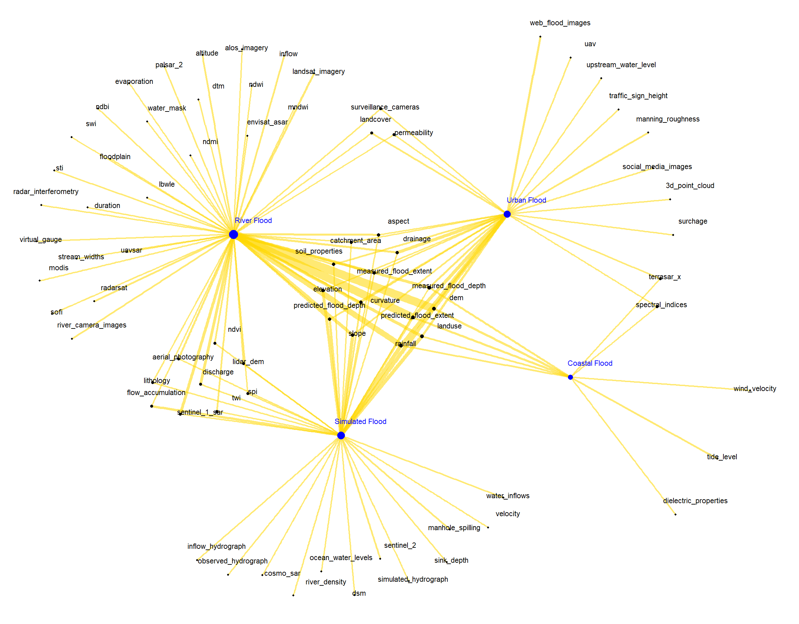
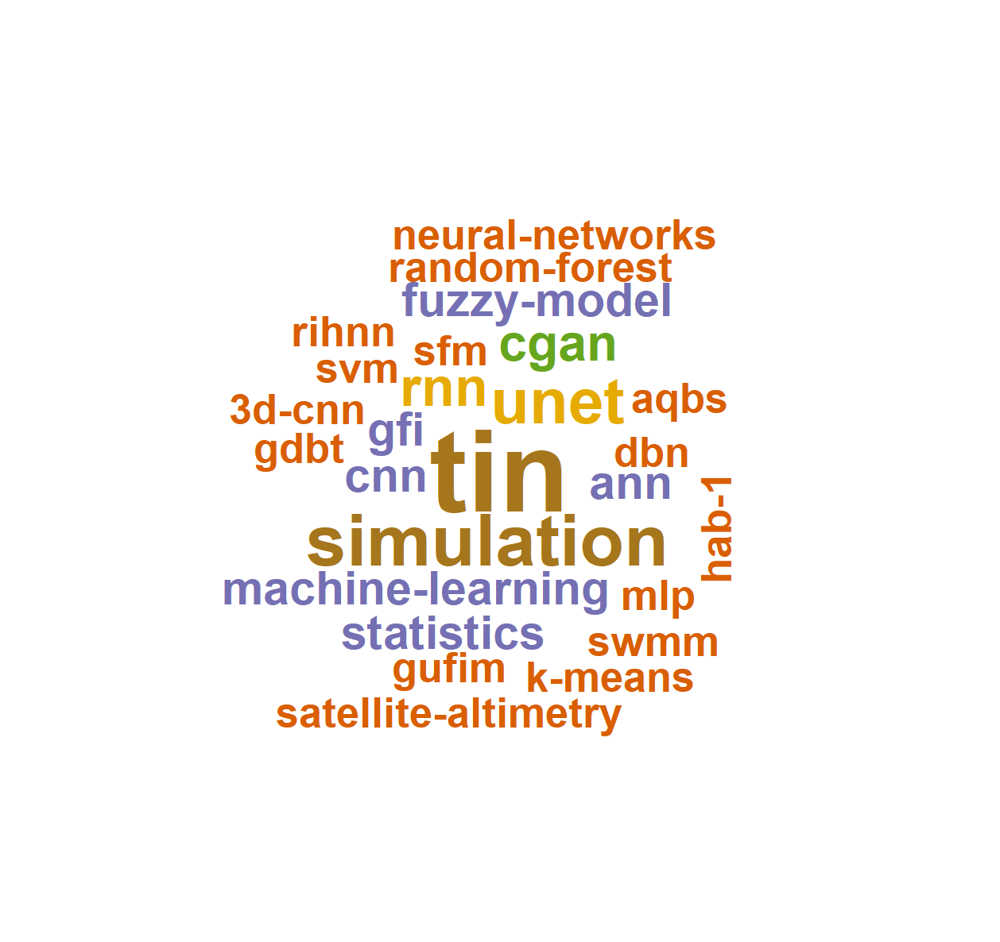

DA — 01
Text Data Mining of Flood Depth Research Literature with R
Applied R text analytics to a corpus of flood depth estimation research papers — extracting dominant methods, evaluation metrics, and structural relationships between flood types and data variables. Insights directly informed model selection and literature positioning in subsequent deep learning research.
Objective
To analyze research on floodwater depth estimation to identify key methods, evaluation metrics, and relationships between flood types and data variables — synthesizing a fragmented literature systematically.
Method
Applied R text analytics libraries — wordcloud2, tidyverse, tidygraph, FactoMineR, dplyr, ggplot2 — to extract, process, and visualize text data from peer-reviewed research papers on flood depth estimation.
Outcome
Network graphs revealing flood type × data variable interactions. Word clouds of dominant depth estimation methods and evaluation metrics. Insights useful for environmental modeling and flood-risk assessment strategy.
Key Findings
- Network analysis revealed clustering between SAR-based methods and pluvial flood types, with optical imagery more associated with fluvial events.
- RMSE and MAE emerged as the dominant evaluation metrics across flood depth literature, followed by R² and Bias.
- Deep learning methods (U-Net, CNN variants) showed increasing dominance over traditional hydraulic models in recent publications.

ng_fldtypes.pngNetwork graph
'">

depthMethods.png